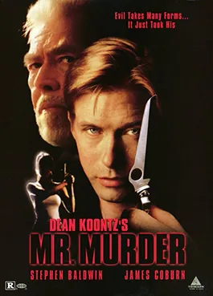

The genetics
Cloning is the premise. A secret organisation uses genetic engineering to grow an assassin from a donor's DNA, but a lab mix-up means the clone is made from the cells of an unsuspecting writer, so the killer is genetically identical to an ordinary family man. The story is about identity: the clone wants the life of the man he was copied from, and the relationship between them is presented as a mystical, telepathic bond rather than a biological one. The scientists and handlers are cynical figures working for covert interests who treat the clone as a weapon and are willing to murder a whole family to protect their secret. The plot greatly exaggerates what cloning can do: a real clone is a genetic copy that develops from an embryo and ages normally, and it would have no special connection to its donor's mind.
How genetics is portrayed
- Overall portrayal of genetics
- negative Cloning is the tool of cynical covert operatives who treat a human copy as a weapon and are ready to murder a family; the story ends with the innocent family uprooted under new identities.
- Outcome of the genetic intervention
- negative The project yields a conditioned killing machine who stalks Marty to take his place, provokes a hit on the family, forcing them into hiding, and is himself killed.
- Drew Oslett Sr. and Drew Oslett Jr.
- villain Aim: malevolent (negative). These shadowy operatives who supply assassins kill a candidate for his DNA and use cloning and genetic engineering to grow Alfie as a 'perfect untraceable assassin', then order a hit on the whole Stillwater family to protect their secret; who they work for is not stated.
The story
Drew Oslett Sr. and his son, Drew Oslett Jr., are shadowy operatives who supply assassins and plan to use genetic engineering and cloning to create a perfect, untraceable killer. After killing their chosen candidate to obtain his DNA, they discover that the tissue samples have been contaminated and replaced by those of Marty Stillwater, a successful mystery novelist. Seven years later the clone, Alfie, has been engineered as a perfect soldier and conditioned into a remorseless killing machine. Unknown to his creators, he has developed a telepathic bond with Marty and the ability to see remotely. Jealous of Marty's life and family, Alfie sets out to take his place, and the Osletts order a hit on the whole Stillwater family. The two-part television miniseries, starring Stephen Baldwin in both roles, is based on the 1993 novel by Dean Koontz.